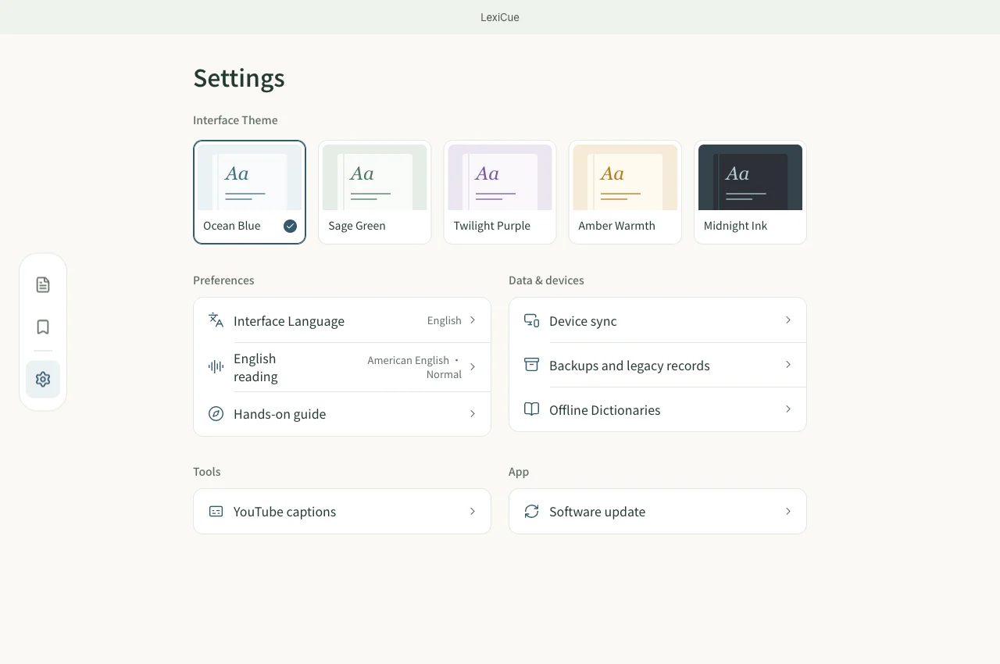
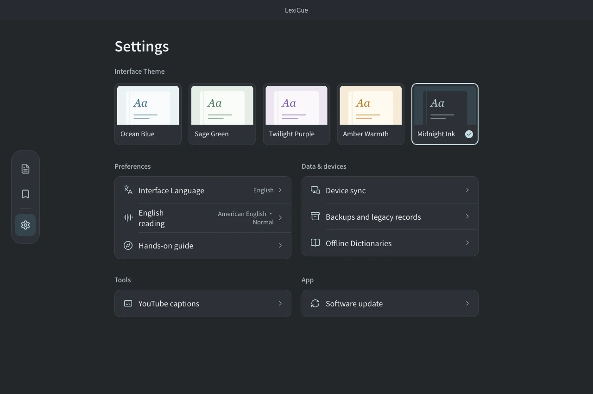

Settings
Mac and iPhone share four settings groups, with platform-specific actions where needed.
On this page
Preferences and appearance
Choose English, Chinese, Japanese or German for the interface; English remains the learning language. Pick ocean, sage, amber, twilight or midnight on the settings home. Reading font controls stay in the reader.
The Preferences group also contains speech preferences and replaying the first-use guide.



Pair Mac and iPhone
- Connect one Mac and one iPhone to a mutually reachable local network and open Settings → Device sync on both. Allow local-network access; the iPhone needs camera permission for scanning.
- Show the temporary QR code on Mac, scan it with iPhone, then compare the device names and code on both. Confirm on each device to trust the pairing and merge the two local libraries.
Sync and recovery limits
Paired apps exchange material text, sentence timing, existing Chinese translations, saved contexts, notes, tags and reading positions, including edits and deletions. Original media files and device preferences stay on their devices. Windows and Android do not support this Apple-device sync.
Both sides create a recoverable backup before the first merge. Offline edits wait for reconnection; keep iPhone in the foreground. Mac can optionally keep receiving after its window closes. Sleep or an isolated guest network can interrupt reachability.
Review preserved alternate edits in Device sync if needed. Removing the device revokes its trust and keeps local data. Restore a pre-merge backup from device management when necessary; sync is not a substitute for your own backup.
Data: backup and dictionary
Backup offers export, restore and History. Dictionary shows local Longman availability and its audio status; retry if unavailable. Online lookup sources may require internet.
Dictionary meanings
Lookup can retain a reference to the current dictionary result. It is a reference, not a confirmed sentence meaning. You can save your own explanation even when no dictionary entry is available.
Tools: subtitles
Desktop includes browser-session preferences and dependency diagnostics. iPhone uses public English tracks and offers subtitle-cache clearing. An old desktop session preference does not enable authenticated iPhone downloads.
App: software updates
Open App → Software updates. Mac can check for an available update; a locally installed iPhone build shows version, installation method and update information. This does not imply App Store or public iPhone distribution.